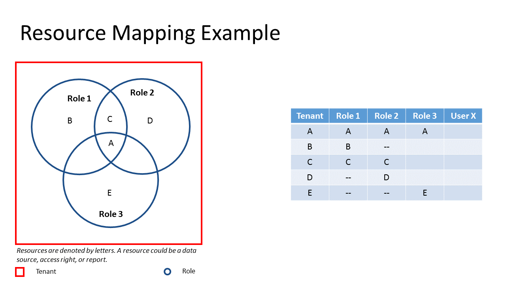

The Nature of Izenda Security¶
Izenda abides by a few simple rules to ensure that resources are properly secure. A resource could be a data source, access right, or report. We will use the following example to display these laws. In this example, we have a tenant with access to resources {A, B, C, D, E}. We have three roles: Role 1 with access to {A,B,C}; Role 2 with accecss to {A,C,D}; Role 3 with access to {A,E}. Finally, we have a User X that we would like to grant access to to certain resources.

{kind=link}
Fig. 15 Resource Mapping Example
Security at a Role Level¶
- Security at a role level allows you to restrict access to resources.
The Law of Filtered Resources¶
- Resources provided to a user is filtered from the broadest indentity to the narrowest. Therefore, when the identity of a user is established, a tenant is created, a role is created, and, finally, a user is created.
- Suppose we want User X to have access to Resource A. User X could have either Role 1, Role 2, or Role 3.
- Suppose we want User X to have access to Resource E. User x must have Role 3.
- Suppose we want User X to have access to Resource F. Since we are only aware of one tenant and that tenant does not have access to Resource F, User X cannot have access to Resource F.
The Law of Least Restriction¶
- The access for a user is the union of all of it’s identities’ access. For reports/dashboards, the access for a user is the union of all of it’s identities’ report/dashboard and all access rights explicitly defined in a report/dashboard.
- Users can only belong to one tenant and, therefore, roles defined in a tenant contain subsets of resource access of the tenant. Since users can have multiple roles, the role identity of a user is the union of all it’s roles. Therefore, if a user belongs to one role that does not allow access to a resource but it also belongs to a role that does allow access to a resource, the user will have access to the resource.
- Suppose we want User X to have access to Resources {A, B, C, D, E}. User X must have Role 1, Role 2, Role 3.
- Suppose we want User X to have access to Resources {A, C, D, E}. User X must have Role 2 and Role 3.
- The Law of Least Restriction makes it impossible to define a user’s access to a resource by the instersection of roles with only the use of roles.
- Suppose we want User X to have access to Resources {A, C, E} but we do not want it to have access to Resources {B, D}. With the roles provided, it is impossible to restrict access with roles alone.
- The Law of Least Restriction makes it impossible to define roles within roles (subsets) with only the use of roles
Security at a Code Level¶
- Security at a code level allows for further granulation of data.
{kind=link}
{kind=link}
Security at a Report Level¶
- Explicit permissions in reports regarding modification supersede permissions set in a role.
- If a user’s role does not grant it access to data or code is used to filter the data, the user will not have access to the data. A message “No Results Found” will be displayed.
- In the report designer, categories exist if there is a report that exists within it.
- In the report designer, categories are only visible to a user if at least one report is visible to the user.